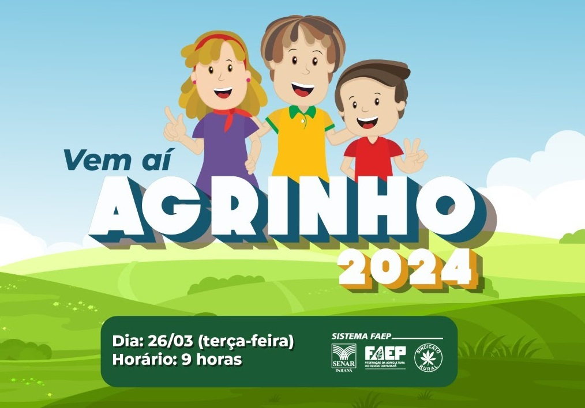
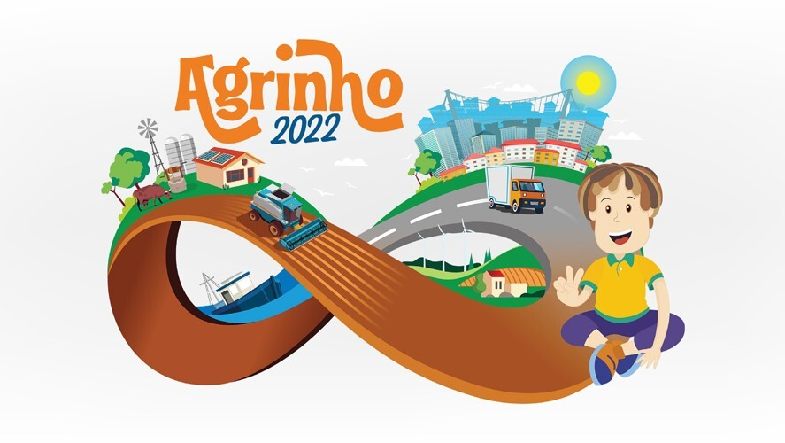
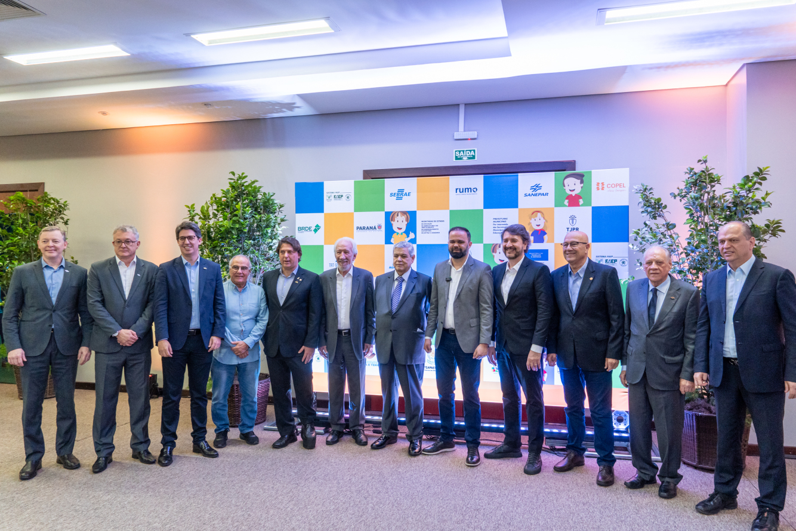

Oque é o concurso Agrinho?
O concurso Agrinho é uma iniciativa educacional promovida pelo Serviço Nacional de Aprendizagem Rural (SENAR) e pela Federação da Agricultura e Pecuária do Estado do Paraná (FAEP), em parceria com outras entidades. O objetivo do concurso é promover a educação no campo, estimulando o aprendizado sobre temas relacionados à agricultura, meio ambiente, saúde, segurança e cidadania, entre outros.

O tema de 2024
O tema "Do Campo à Cidade" do concurso Agrinho 2024 sugere uma reflexão sobre a interconexão entre o meio rural e urbano, destacando a importância da agricultura e suas cadeias produtivas para a vida nas cidades. Os participantes são incentivados a desenvolver projetos educacionais que abordem questões como a produção de alimentos, o uso sustentável dos recursos naturais, a preservação do meio ambiente, a saúde alimentar e a valorização do trabalho no campo.
Criação
Em 1995, João da Silva, Maria Oliveira, Pedro Santos, Ana Souza e Luiz Ferreira uniram esforços para criar o Concurso Agrinho. Movidos pela paixão pela educação rural e sustentável, esses líderes visionários trabalharam incansavelmente para lançar uma iniciativa que capacitaria os jovens a enfrentar os desafios do campo e promoveria práticas agrícolas responsáveis. Juntos, eles conceberam um programa inovador que se tornou uma ferramenta poderosa para o desenvolvimento das comunidades rurais em todo o Brasil.
